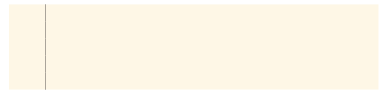

Collect, organise and summarise data
Data handling is the part of Mathematics that deals with numbers and facts that we collect about the world around us. Data can be many different things, for example people's opinions on politics or the success rates of treating people with a certain kind of medicine. We use data to help us make decisions and solve problems about the world around us.
In this chapter you will focus on: collecting data using questionnaires; organising data, which includes using stem-and-leaf displays and grouping data into intervals; and then summarising data by determining the mode, median, mean and range of sets of numerical data.
Collecting data
Think of something that you really want to know about your own community or about children your age in other schools. For example, "How many Grade 7 learners in South Africa have access to a computer?" What would you find interesting to know about?
When you start the cycle of data handling, you start with at least one question. But there can of course be many more questions.
Once you have a research idea in mind, you can start planning how you will collect the data. When you collect data, you need to consider:
- what question you are asking
- where you will find the data to answer the question (for example from people such as your peers, family or the wider community; or from published sources such as newspapers, books or magazines)
- how you will collect the data (for example by using questionnaires or conducting interviews)
- who you will collect the data from (the entire population or a sample).
Populations and samples: from whom to collect data
In data handling, population refers to the whole group you are asking the question about. Sample refers to a small number of the group that you think will represent the whole group.
Here is an example: Thandeka wants to know about the home languages of all Grade 7s across the whole of South Africa. All Grade 7s in all of South Africa would be the population of that data. But it is not possible to reach every single Grade 7 learner in South Africa, so Thandeka could choose a sample of Grade 7 learners. For example, she could choose to collect data from her own Grade 7 class and from two other Grade 7 classes from two other schools.
But if Thandeka chose her own Grade 7 class and only two other classes from other schools, her sample would not really give information about learners across the whole of South Africa, because the learners in all three of the schools could be from the same language group.
So, how can you try to make sure that a sample gives information about the whole population? In other words, how can you make sure that your sample is representative of the population?
1. Choose a big enough sample. Generally, the bigger the sample is the more likely it is to represent the characteristics of the population.
2. Ensure that you do not take a sample from only one of the groups within the population. For example, if you want to find out if people like watching soccer, you cannot survey people at a Chiefs versus Pirates match. The majority of these people will almost certainly be there because they love watching soccer!
Example
Ganief wishes to find out what the most popular food at the school tuck shop is and surveys 10 learners in Grade 7. There are 2 000 learners at the school.
Give two reasons to explain why the sample chosen is not likely to be representative of the population.
Answer
1. The sample is too small.
2. He is only getting the views of Grade 7s, not of the learners in any of the other grades (who might have very different views).
Thinking about populations and samples
1. Here are some research questions. Use a P to show which statement describes the population and an S to show which statement describes a sample of the population.
(a) What percentage of plants in the vegetable patch is affected by disease?
☐ All the plants in the vegetable patch
☐ Every fourth or fifth plant in the vegetable patch
(b) How often do teenagers recycle plastic?
☐ Every teenager in South Africa
☐ About 40 teenagers in the community
(c) How many hours of sleep do 10-year-olds in my community get per night?
☐ All 10-year-olds in the community
☐ About ten 10-year-olds in the community
2. You want to know the most popular colour of the learners in your school.
(a) Write down the population of your data collection.
(b) Write down what sample you would use.
3. Census@School took place in 2001 and 2009. These were surveys that Statistics South Africa did to show learners how information about people is collected and analysed. The Census@School wanted to know personal, community and household information about learners from Grades 3 to 12. This is how they chose their sample:
- A sample of 2 500 schools was selected from the Department of Basic Education's database of approximately 26 000 registered schools.
- The schools were divided into groups depending on their province, school type (primary: Grades 3 to 7 only; intermediate: Grades 5 to 9 only; secondary: Grades 8 to 12 only; combined: Grades 3 to 12), and education district.
- A sample of schools was selected from each of these groups.
- Approximately 790 000 learners participated in the Census@School 2009.
This information was included in their final report.
(a) What percentage was the sample of all the schools in the country?
(b) Why do you think they separated the schools into groups first?
(c) Do you think the information that they obtained from this survey would be interesting to you? Explain.
4. Unathi goes to River View Girls' Primary School. She wants to find out whether 13-year-olds in her town prefer rugby or netball. She surveys 10 learners from each of the three Grade 7 classes at her school. Is the sample chosen likely to be representative of the population (13-year-olds in her town)? Explain your answer.
Constructing questionnaires: how to collect data
A questionnaire is a sheet with questions used to collect data from people. Each respondent in the sample completes a questionnaire. The questions on the sheet can be structured differently, for example:
- The questions may require “yes” or “no” answers.
- A selection of answers (multiple-choice answers) may be provided for respondents to choose from.
- The respondents may enter their own views or information on the questionnaire.
The type of responses you need (for example a simple "yes" or "no" or more detailed information) depends on the data you intend to collect.
Look at the examples below. Notice how each question is worded to be as clear as possible and to allow the data to be collected easily. (The questions in examples 3 and 4 were used by Census@School in their 2009 questionnaire.)
Example 1 Example 2
| Example 1 | Example 2 | |
|
Do you help with chores at home? ☐ Yes ☐ No |
Which of these chores do you help with? ☐ cleaning dishes ☐ washing clothes ☐ sweeping/vacuuming ☐ making beds |
Note in example 3 how all the ages from 5 to 19 are covered, but without any overlaps.
Example 3 |
|
How old are you? ☐ 5-8 years ☐ 9-11 years ☐ 12-15 years ☐ 16-19 years |
Example 4
|
14. Tick the box if you have: 1 ☐ Running water inside home 6 ☐ A cell phone 2 ☐ Electricity inside home 7 ☐ Access to a computer 3 ☐ A radio at home 8 ☐ Access to the internet 4 ☐ A TV at home 9 ☐ Access to a library 5 ☐ A telephone at home |
Example 5
|
6. How tall are you without your shoes on? Answer to the nearest cm. ☐☐☐ centimetres 7. What is the length of your right foot, without a shoe? Answer to the nearest cm. ☐☐☐ centimetres 8. What is your arm span? (Open arms wide, measure the distance across your back from the tip of your right hand middle finger to the tip of your left hand middle finger.) Answer to the nearest cm. ☐☐☐ centimetres |
Making questionnaires
1. (a) Refue wants to find out how much pocket money learners in her class receive each month. She draws up the following multiple-choice question:
|
How much pocket money do you get? ☐ ☐ ☐ 0-10 ☐ ☐ ☐ 10-20 ☐ ☐ ☐ 20-30 ☐ ☐ ☐ 30-40 |
Explain why this question is not clear. Give at least three reasons.
(b) Draw up the multiple-choice question so that it will allow Refue to collect the data that she needs.
2. You want to find out which sports learners at your school play.
(a) Describe the population of your data.
(b) Describe the sample you will use.
3. Make a question with yes/no or multiple-choice responses to help you collect the data you need:
4. Collect your data from your population or the sample you chose. Keep your data for the next chapter.
Organising data
To organise data that we have collected, we can use tally marks and tables, and stem-and-leaf displays. We can also group the data when there are many data values. The ways that we organise the data depends on the type of data we collected.
Different types of data
Look at the five examples of questions for questionnaires on pages 172 and 173.
1. Which of the examples will give you data that looks like this?
|
Yes |
1 235 learners |
|
No |
1 265 learners |
2. Which of the examples might give you data that looks like this?
132 cm; 141 cm; 160 cm; 132 cm; 154 cm; 145 cm; 147 cm; 129 cm; 121 cm; 143 cm; 135 cm; 154 cm; 156 cm; 133 cm; 156 cm; 123 cm; 137 cm etc.
3. What could the data for example 4 look like? Fill in this table to give a possible example for 30 learners. Use numbers that you have made up.
|
Number of learners |
|
4. Which of the examples might give you a data set that looks like this?
|
5-8 years |
15 |
|
9-11 years |
45 |
|
12-15 years |
32 |
|
16-19 years |
28 |
The type of data in questions 1 and 3 is called categorical data. This is often described by words. The categories don't have to be given in order.
The type of data in questions 2 and 4 is called numerical data. Numerical data can be whole numbers only, or it can include fractions.
For both of these kinds of data, your results give you a list of responses. You will soon learn how to organise these responses.
5. Classify the following data sets as categorical or numerical.
(a) the number of pages in books
(b) the length of learners' arm spans
(c) learners' favourite soccer teams
(d) the time it takes 13-year-olds to run 1,5 km
(e) the cost of different types of cell phone
(f) colours of new cars manufactured
Organising categorical data
Thandeka asked the following question: "Which of South Africa's official languages are the home languages of the learners in my class?"
Thandeka drew up a table with each learner's name. She then asked each learner what his or her home language was, and wrote it down as follows:
|
Name |
Language |
Name |
Language |
Name |
Language |
|
Nonkhanyiso |
isiXhosa |
Marike |
Afrikaans |
Herbert |
Sepedi |
|
Anna |
Afrikaans |
Jennifer |
Sepedi |
Thabo |
isiXhosa |
|
Mpho |
Ndebele |
Nomonde |
isiXhosa |
Nomi |
isiXhosa |
|
Nontobeko |
isiZulu |
Thandeka |
Sepedi |
Manare |
Sepedi |
|
Jonathan |
English |
Siza |
isiZulu |
Unathi |
Sesotho |
|
Sibongile |
isiZulu |
Prince |
Sesotho |
Gabriel |
Ndebele |
|
Dumisani |
isiZulu |
Duma |
isiZulu |
Marlene |
Afrikaans |
|
Matshediso |
Sesotho |
Thandile |
Sepedi |
Simon |
Sesotho |
|
Chokocha |
Sepedi |
Nicholas |
Sesotho |
Miriam |
Setswana |
|
Khanyisile |
isiXhosa |
Jabulani |
isiZulu |
Sibusiso |
isiZulu |
|
Ramphamba |
Tshivenda |
Nomhle |
isiXhosa |
Mishack |
isiZulu |
|
Portia |
isiZulu |
Frederik |
Afrikaans |
Peter |
Setswana |
|
Erik |
Afrikaans |
Lola |
Afrikaans |
Maya |
Afrikaans |
|
Jan |
Afrikaans |
Zinzi |
isiXhosa |
Thobile |
Sesotho |
|
Palesa |
isiZulu |
Jacob |
Setswana |
We don't need the learners' names in the data. This data could be written as a list of the languages, like this:
|
isiXhosa, Afrikaans, Sepedi, Afrikaans, Sepedi, isiXhosa, Ndebele, isiXhosa, isiXhosa, isiZulu, Sepedi, Sepedi, English, isiZulu, Sesotho, isiZulu, Sesotho, Ndebele, isiZulu, isiZulu, Afrikaans, Sesotho, Sepedi, Sesotho, Sepedi, Sesotho, Setswana, isiXhosa, isiZulu, isiZulu, Tshivenda, isiXhosa, isiZulu, isiZulu, Afrikaans, Setswana, Afrikaans, Afrikaans, Afrikaans, Afrikaans, isiXhosa, Sesotho, isiZulu, Setswana |
Now work with this data set to see what story it is telling you. What do you notice about the data?
1. What do you need to find out from this list of languages?
2. Does it matter what order you write the languages in? Why or why not?
3. (a) Use Thandeka's table. In the space below, draw a dot above each language to show every learner who speaks that language. The languages are in alphabetical order. Try to space out the dots evenly. The dots for Afrikaans have been drawn for you. A graph like this is called a dot plot.
(b) Which languages have the same numbers of learners?
(c) List the languages in order from the language spoken by the most learners to the language spoken by the fewest learners.
You can also record results in a tally table. To do this, you draw a single line ( | ) for each item you count. This line is called a tally mark.
You group tally marks in groups of five. The fifth tally mark is always drawn horizontally to show that the group of five is complete. Then you start a new group. This makes it easy to quickly count how many tally marks there are in a particular category.
Examples of tally marks:
A count of three = |||
A count of four = ||||
A count of five = ||||
A count of seven = |||| ||
4. (a) Complete the table.
Home language of learners in the Grade 7 class
|
Language |
Number of speakers of each home language |
Total |
|
Afrikaans |
|
8 |
|
English |
| |
1 |
|
isiXhosa |
||
|
isiZulu |
||
|
Ndebele |
||
|
Sepedi |
||
|
Sesotho |
||
|
Setswana |
||
|
Siswati |
||
|
Tshivenda |
||
|
Xitsonga |
||
|
Total (whole class) |
(b) How many learners altogether were asked about their home language?
(c) Which home language occurs most often in this class?
(d) Which languages are not spoken as a home language by any of the learners in this class?
(e) Write a short paragraph to describe the home languages in Thandeka's class.
Dot plots and tally tables are used for numerical data too. You can write data values on prepared tally tables or dot plots as you record them. This sorts the data at the same time as it is recorded.
Introducing stem-and-leaf displays
A stem-and-leaf display (also called a stem-and-leaf plot) is a way of listing numerical data using two columns divided by a vertical line. Each number is split across the columns.
For example, if the numbers in a set of data consist of digits for tens and units (such as 23, 25, 34), the column on the right (the leaf column) shows the units digits of the numbers, and the column on the left (the stem column) shows the tens digits of the numbers.
Numerical data is data that consists of numbers.
In this example, the tens digits range from 1 to 5, so we list these in the stem column. Then we fill in the units digits in the leaf column.
Example 1
Show the following data set as a stem-and-leaf display:
13, 56, 20, 35, 47, 53, 12, 51, 53, 49, 34, 53
First, we order the values in the data set from smallest to biggest:
12, 13, 20, 34, 35, 47, 49, 51, 53, 53, 53, 56
The stem-and-leaf display of the above data set looks like this:
Example 2
This stem-and-leaf display shows the units digits as the leaves, and both the hundreds and tens digits as the stems:
|
10 |
2, 5 |
|
|
11 |
0, 6 |
Key: 10 | 2 means 102 |
|
12 |
1, 4, 4 |
|
|
13 |
||
|
14 |
7, 9 |
|
|
15 |
||
|
16 |
1, 3, 8 |
The values shown are: 102, 105, 110, 116, 121, 124, 124, 147, 149, 161, 163, 168.
Note that if there is a 0 in the leaf column it means the unit digit is a 0, as in 110 above. When there is nothing written in the leaf column next to a stem, it means that there aren't any numbers with that particular stem. In the case of stem 13 above, for example, it means there are no values between 129 and 140.
When you draw stem-and-leaf displays, it is important that the numbers line up vertically so that you can compare the leaves. Draw lines to help you. (Or use grid paper, if you have some.)
Dot plots and stem-and-leaf displays
1. Look at the following stem-and-leaf display and answer the questions below.
|
13 |
1, 9 |
Key: 13 | 1 means 131 |
|
14 |
0 |
|
|
15 |
||
|
16 |
2, 3, 5, 5, 5 |
|
|
17 |
6, 8, 8 |
|
|
18 |
||
|
19 |
4, 6, 7 |
(a) Write down the values in the data set shown by the stem-and-leaf display.
(b) Do most of the values fall in the 160s or 170s?
(c) Which value occurs the most times?
(d) Add the following values to the stem-and-leaf display: 143, 167 and 199.
(e) There are no values in the 150s. Can we add the following to the stem-and-leaf display to show that there are no values in the 150s? Explain your answer.
15 | 0
2. (a) Arrange the values in the following data set in order from smallest to largest:
378, 360, 390, 378, 378, 400, 379, 382, 354, 394, 399, 395, 378, 361, 375
(b) Organise the data set as a stem-and-leaf display.
Key:

(c) Which value occurs most often?
3. (a) The data sets below show the sales of two new makes of cars (Jupiter and Mercury) over 24 months. Draw a dot plot for each set on the number lines.
Mercury: 23, 27, 30, 27, 32, 31, 32, 32, 35, 33, 28, 39, 32, 29, 35, 36, 33, 25, 35,
37, 26, 28, 36, 30
Jupiter: 31, 44, 30, 36, 37, 34, 43, 38, 37, 35, 36, 34, 31, 32, 40, 36, 31, 44, 26,
30, 37, 43, 42, 33
(b) If you look at the dots for Mercury and the dots for Jupiter, what can you see about the sales of the two cars? What does this mean?
Something to think about
What kind of graph does the stem-and-leaf display look like if you turn it by 90°?

Grouping data into intervals
When a data set contains many data items, we sometimes group the data items to help us organise the data. For example, the following data set shows the number of milk bottles collected by 24 learners for recycling:
9, 10, 13, 23, 24, 26, 26, 27, 30, 31, 34, 40, 42, 49, 50, 53, 61, 64, 67, 67, 68, 69, 91, 94
We can group the data into categories called class intervals, such as 0-9, 10-19, 20-29, and so on. We can then count how many times a value occurs in each interval. The number of times a value occurs in an interval is called its frequency.
This table shows the grouped data and the frequency of the values in each interval.
|
Interval |
0-9 |
10-19 |
20-29 |
30-39 |
40-49 |
50-59 |
60-69 |
70-79 |
80-89 |
90-99 |
|
Frequency |
1 |
2 |
5 |
3 |
3 |
2 |
6 |
0 |
0 |
2 |
The table shows that 1 learner collected 0-9 bottles, 2 learners collected 10-19 bottles, 5 learners collected 20-29 bottles, and so on. We can clearly see that most learners (6) collected 60-69 bottles.
Working with grouped data
1. Anita collected data from a sample of Grade 7 learners about how far they live from the nearest grocery store. Below are the results. The values are in kilometres, correct to one decimal figure.
|
0,1 |
0,1 |
0,2 |
0,2 |
0,2 |
0,2 |
0,3 |
0,3 |
0,3 |
0,4 |
0,4 |
0,5 |
0,5 |
0,5 |
0,6 |
|
0,6 |
0,7 |
0,7 |
0,7 |
0,8 |
0,8 |
0,8 |
0,9 |
0,9 |
0,9 |
1 |
1 |
1 |
1,5 |
1,5 |
|
2 |
2 |
2 |
2 |
2,5 |
2,5 |
3 |
3 |
3 |
3,5 |
3,5 |
4 |
4 |
4, |
4,5 |
|
5 |
5 |
6 |
6 |
7 |
7 |
8 |
8 |
9 |
10 |
10 |
15 |
20 |
23 |
30 |
(a) Complete the table alongside to indicate how many of the values appear in each of the given intervals.
|
Interval |
Frequency |
|
less than 1,0 km |
|
|
1,0-5,9 km |
|
|
6,0-9,9 km |
|
|
10 km or further |
(b) How far do most of the learners live from the nearest grocery store?
2. Here are the heights of 50 Grade 7 boys at a school (in centimetres):
|
165 |
148 |
150 |
160 |
165 |
150 |
156 |
155 |
164 |
162 |
|
160 |
158 |
138 |
158 |
140 |
146 |
160 |
148 |
152 |
139 |
|
165 |
148 |
152 |
139 |
165 |
148 |
160 |
163 |
178 |
138 |
|
142 |
179 |
156 |
160 |
160 |
171 |
140 |
160 |
164 |
135 |
|
159 |
143 |
167 |
138 |
163 |
164 |
155 |
160 |
167 |
165 |
(a) Draw a stem-and-leaf display to show this set of data.
Key:

(b) Write a short paragraph to describe the data set.
(c) Complete the frequency table below for the grouped data from your stem-and- leaf display in question (a).
|
Class interval (cm) |
Frequency |
|
130-139 |
|
|
140-149 |
|
|
150-159 |
|
|
160-169 |
|
|
170-179 |
|
|
Total |
Summarising data
When you have collected data, you often need to tell someone what you have found out. People want to know what your conclusions are, without looking at all of the data you have collected.
It is often useful to summarise a set of numerical data by using one value. For example, which value best summarises or describes the following data set?
0 1 1 5 8 8 9 9 10 10 10 11 11
Statisticians use any of three values that show the most central values in the set, or the value around which the other values tend to cluster. These values are called the measures of central tendency or summary statistics.
Statisticians are mathematicians who specialise in collecting, organising and analysing data.
-
The mode is the value that occurs the most frequently in the data set. In the example above, the mode is 10 because it occurs the most times (three times).
A data set can have more than one mode.
-
The median is the value exactly in the middle of the data set when the data values are arranged in order from smallest to largest. For the data set above, the median is 9 because there are si(x) values to the right of the first 9 and si(x) values to the left of it.
If the data set consists of an even number of items, the median = sum of the two middle values divided by 2.
-
The mean (average) is the total of the values divided by the number of values in the data set. So:
\(\text{Mean} = \frac{\text{Total of values}}{\text{Number of values}} = \frac{93}{13} = 7.15 \)
In the data set above, either 10 (mode), 9 (median) or 7,15 (mean) could be used to represent the entire data set.
Understanding the mean
This activity will help you to understand how the mean represents the whole set of data.
Make piles of blocks of different heights:

Then move blocks from the higher piles to the lower ones to make all the piles equal:

You have just found the mean: Each pile now has 4 blocks in it. But how do you do this if you only have the numbers 5, 6, 3, 2 and 4 to work with? You add them up and then divide the answer by the total number of values (numbers):
\(5 + 6 + 3 + 2 + 4 = 20 \\ 20 \div 5 = 4\)
What this means is that you are finding a single number that you can use in place of all the different numbers and still get the same total.
It is also useful to know how big the spread of the data is.
The range of a data set is the highest value minus the lowest value. For example, for the data set on the previous page, the range is: \(11 - 0 = 11\)
The bigger the range, the more the data is spread out. The smaller the range, the more the data is clustered around similar values.
Determining the mode, median, mean and range
1. The following data set shows the shoe sizes of a sample of learners at a school:
1, 1, 1, 2, 2, 2, 3, 3, 4, 4, 4, 5, 5, 5, 5, 5, 5, 6, 6
(a) What is the mode of the data set?
(b) What is the median of the data set?
(c) What is the mean? (Round off to the nearest whole number.)
(d) What is the range of the data set?
2. The following data set shows the number of siblings (that is, brothers and sisters) that the learners in a sample of Grade 7 learners have:
0, 0, 0, 1, 1, 1, 1, 1, 2, 2, 2, 2, 2, 2, 2, 3, 3, 3, 3, 3, 4, 4, 5
(a) How many learners are in the sample?
(b) What is the mode of the data set?
(c) What is the median of the data set?
(d) What is the mean? (Round off to the nearest whole number.)
(e) What is the range of the data set?
3. The following data set shows the number of hours worked in a week by a sample of parents at School A:
15, 16, 20, 25, 25, 30, 40, 40, 40, 40, 40, 42, 45, 45, 48, 48
(a) How many parents are in the sample?
(b) What is the mode of the data set?
(c) What is the median of the data set?
Remember, if the number of items in a data set is even, the median = the sum of the two middle numbers divided by 2.
(d) What is the mean? (Round off to one decimal place.)
(e) What is the range of the data set?
4. The following data set shows the number of hours worked in a week by a sample of parents at School B:
25, 30, 35, 35, 35, 40, 40, 40, 40, 40, 42, 45, 45, 45, 48, 50
(a) How many parents are in the sample?
(b) What is the mode of the data set?
(c) What is the median of the data set?
(d) What is the mean? (Round off to one decimal place.)
(e) What is the range of the data set?
5. The following is a list of test scores of learners in a Grade 7 class:
40, 42, 44, 13, 10, 23, 68, 31, 69, 91, 30, 49, 50, 53, 67, 94, 61, 64, 67, 34
(a) Arrange the scores from the lowest to the highest.
(b) How many learners are in the population?
(c) What is the mode of the data set?
(d) What is the median of the data set?
(e) What is the mean?
(f) What is the range of the data set?
6. A hockey player recorded the number of goals she scored in her last 30 matches:
1 1 3 2 0 0 4 2 2 4 3 1 0 1 0
2 1 5 1 3 7 2 2 2 4 3 1 1 0 3
(a) Draw a dot plot on the number line below to organise these data values.
Now use the dot plot to answer these questions.
(b) Which of the values are quite different to the other values?
(c) Which number of goals has she scored the highest number of times?
(d) Which numbers of goals did she score in the two groups with five matches each?
(e) Use the dot plot to find the mode of the data.
(f) Use the dot plot to find the median.
(g) What is the mean of the goals?